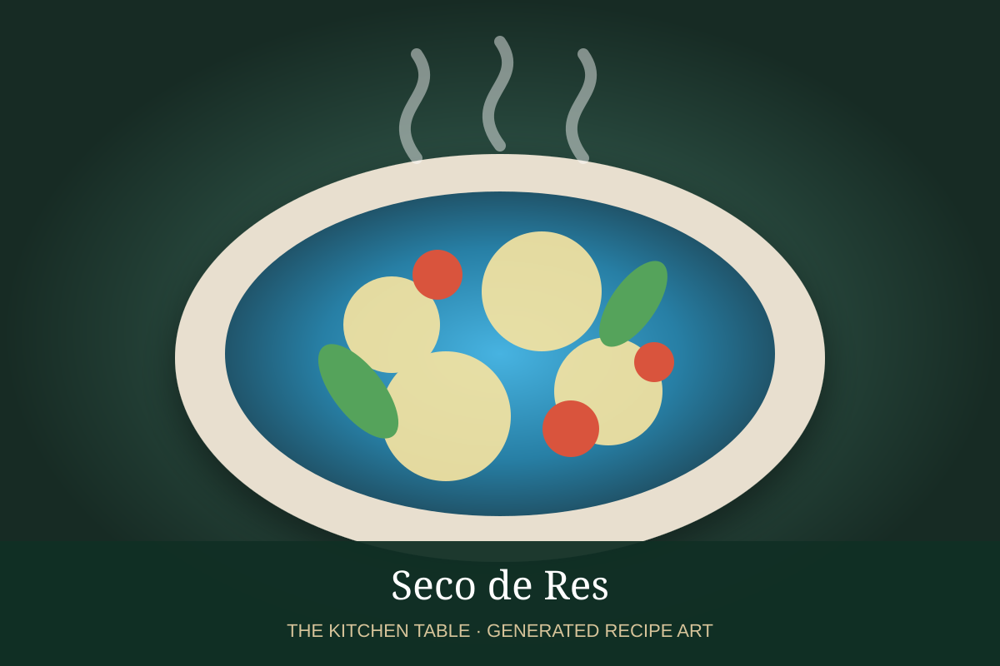

← Back to all recipes
BEEF · PERUVIAN
Seco de Res
A deeply savory Peruvian beef stew braised with cilantro, ají amarillo, dark beer, peas, carrots, and potatoes.
2 hr 30 minServes 6

Photo: Poyoteca / Toast
Ingredients
- 3 lb beef chuck, cut into large cubes
- 2 tbsp neutral oil
- 1 large onion, diced
- 4 garlic cloves, minced
- 2 tbsp ají amarillo paste
- 1 bunch cilantro, blended with 1/2 cup stock
- 1 cup dark beer
- 2 cups beef stock
- 2 carrots, cut into chunks
- 2 potatoes, cut into chunks
- 1 cup peas
- 1 tsp cumin
- Salt and black pepper
- Cooked white rice, for serving
Preparation
- Season and brown beef deeply in batches; remove.
- Cook onion until soft, then add garlic, ají amarillo, and cumin.
- Add cilantro puree and beer and simmer briefly.
- Return beef with stock, cover, and braise gently about 1 1/2 hours.
- Add carrots and potatoes and cook until tender; stir in peas near the end.
- Adjust seasoning and serve with white rice.